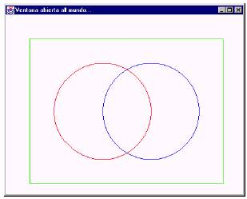
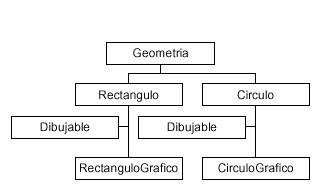
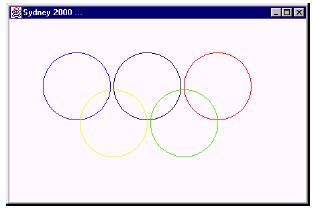

PRACTICA 5 CLASES Y
CONSTRUCTORES
INTRODUCCIÓN TEORICA
Los constructores son un
ejemplo típico de métodos
sobrecargados
(overloaded).
Como se puede ver, no
tienen valor
de retorno (ni
siquiera
void) y su nombre
coincide con el de la clase.
Los nombres de Java son sensibles a las
letras mayúsculas y minúsculas. Así, las variables masa,
Masa y MASA son consideradas
variables completamente diferentes. Las reglas del lenguaje
respecto a los nombres
de variables son muy amplias y permiten mucha libertad al programador,
pero es habitual seguir
ciertas normas que facilitan la lectura y el mantenimiento de los programas
de ordenador. Se
recomienda seguir las siguientes instrucciones:
1. En Java es habitual utilizar
nombres con minúsculas, con las excepciones que se indican en los
puntos siguientes.
2. Cuando un nombre
consta de varias palabras es habitual poner una a continuación de otra,
poniendo con mayúscula
la primera letra de la palabra que sigue a otra (Ejemplos: elMayor(),
VentanaCerrable, RectanguloGrafico, addWindowListener()).
3. Los nombres de clases e interfaces comienzan siempre por
mayúscula (Ejemplos: Geometria,
Rectangulo, Dibujable, Graphics, ArrayList, Iterator).
4. Los nombres de objetos, los nombres de métodos y variables
miembro,
y los nombres de las
variables
locales de
los métodos, comienzan siempre por minúscula (Ejemplos: main(),
dibujar(), numRectangulos, x, y, r).
5. Los nombres de las variables
finales,
es decir de las constantes, se definen siempre con
mayúsculas (Ejemplo: PI).
ESTRUCTURA GENERAL
DE UN PROGRAMA JAVA
El anterior ejemplo
presenta la estructura habitual de un programa realizado en cualquier lenguaje
orientado a
objetos u
OOP
(Object
Oriented Programming),
y en particular en el lenguaje Java.
Aparece una clase que
contiene el programa principal (aquel que contiene la función main()) y
algunas clases de
usuario (las específicas de la aplicación que se está desarrollando) que
sonutilizadas por el programa principal. Los ficheros fuente tienen la
extensión *.java, mientras que los
archivos compilados
tienen la extensión *.class.
Un archivo fuente (*.java) puede contener más de
una clase, pero sólo una puede ser public(aunque lo correcto es una clase por archivo).
El nombre del archivo
fuente debe coincidir con el de la clase public (con la extensión *.java). Si
por ejemplo en un
archivo aparece la declaración (public class MiClase {...}) entonces el nombre del
archivo deberá ser MiClase.java. Es importante que
coincidan mayúsculas y minúsculas ya que
MiClase.java y miclase.java serían clases diferentes
para Java. Si la clase no es public, no es
necesario que su nombre
coincida con el del archivo. Una clase puede ser public o package
(default), pero no private o protected. Estos conceptos se
explican posteriormente.
De ordinario una
aplicación está constituida por varios archivos *.class. Cada clase realiza
unas funciones
particulares, permitiendo construir las aplicaciones con gran modularidad de
independencia entre
clases. La aplicación se ejecuta por medio del nombre de la clase que contiene
la función main() (sin la extensión *.class). Las clases de Java se agrupan en packages, que son
librerías de clases. Si
las clases no se definen como pertenecientes a un package, se utiliza un
package por defecto (default) que es el directorio
activo.
Concepto de Clase
Una clase es una agrupación de datos (variables o campos) y
de funciones
(métodos)
que operan
sobre esos datos. A
estos datos y funciones pertenecientes a una clase se les denomina variables y
métodos o funciones
miembro.
La programación orientada a objetos se basa en la programación de
clases. Un programa se
construye a partir de un conjunto de clases.
Una vez definida e
implementada una clase, es posible declarar elementos de esta clase de
modo similar a como se
declaran las variables del lenguaje (de los tipos primitivos int, double,
String, …). Los elementos
declarados de una clase se denominan objetos de la clase. De una
única
clase se pueden declarar
o crear numerosos objetos. La clase es lo genérico: es el patrón
o modelo
para crear objetos. Cada objeto tiene sus
propias copias de las variables miembro, con sus propios
valores, en general
distintos de los demás objetos de la clase. Las clases pueden tener variables
static, que son propias de la
clase y no de cada objeto.
La jerarquía de
clases de Java (API)
Durante la generación de
código en Java, es recomendable y
casi necesario tener siempre a la vista
la documentación on-line del API de Java 1.X ó Java 1.8. En dicha
documentación es posible ver
tanto la jerarquía de
clases, es decir la relación de herencia entre clases, como la información de
los
distintos packages que componen las
librerías base de Java.
Es importante distinguir
entre lo que significa herencia y package. Un package es una
agrupación arbitraria de
clases, una forma de organizar las clases. La herencia sin embargo consiste
en crear nuevas clases
en base a otras ya existentes. Las clases incluidas en un package no derivan
por lo general de una
única clase.
En la documentación on-line se presentan ambas
visiones: "Package
Index"
y "Class
Hierarchy", tanto en Java 1.X como en Java 1.8, con pequeñas
variantes. La primera presenta la
estructura del API de Java agrupada por packages, mientras que en la
segunda aparece la jerarquía
de clases. Hay que
resaltar una vez más el hecho de que todas las clases en Java son derivadas de la
clase java.lang.Object, por lo que heredan
todos los métodos y variables de ésta.
Si se selecciona una
clase en particular, la documentación muestra una descripción detallada
de todos los métodos y
variables de la clase. A su vez muestra su herencia completa (partiendo de la
clase java.lang.Object).
DESARROLLO DE LA
PRÁCTICA
Clase Ejemplo1
A continuación se
muestra el programa principal, contenido en el archivo Ejemplo1.java. En
realidad, este programa
principal lo único que hace es utilizar la clase Geometría y sus clases
derivadas. Es pues un
programa puramente “usuario”, a pesar de lo cual hay que definirlo dentro de
una clase, como todos
los programas en Java.
1. // archivo Ejemplo1.java
2. import java.util.ArrayList;
3.
import java.awt.*;
4.
class Ejemplo1 {
5.
public static void main(String arg[]) throws InterruptedException
6.
{
7.
System.out.println("Comienza main()...");
8.
Circulo c = new Circulo(2.0, 2.0, 4.0);
9.
System.out.println("Radio ="+c.r +"unidades.");
10.
System.out.println("Centro = (" + c.x + "," + c.y + ")
unidades.");
11. Circulo c1 = new Circulo(1.0,
1.0, 2.0);
12. Circulo c2 = new Circulo(0.0,
0.0, 3.0);
13. c = c1.elMayor(c2);
14. System.out.println("El
mayor radio es " + c.r + ".");
15.
c = new Circulo(); // c.r = 0.0;
16. c = Circulo.elMayor(c1, c2);
17. System.out.println("El
mayor radio es " + c.r + ".");
18. VentanaCerrable ventana =
19. new VentanaCerrable("Ventana
abierta al mundo...");
20. ArrayList v = new ArrayList();
21. CirculoGrafico cg1 = new
CirculoGrafico(200, 200, 100, Color.red);
22. CirculoGrafico cg2 = new
CirculoGrafico(300, 200, 100, Color.blue);
23. RectanguloGrafico rg = new
24. RectanguloGrafico(50, 50, 450,
350, Color.green);
25.
v.add(cg1);
26.
v.add(cg2);
27.
v.add(rg);
28.
PanelDibujo mipanel = new PanelDibujo(v);
29.
ventana.add(mipanel);
30.
ventana.setSize(500, 400);
31.
ventana.setVisible(true);
32.
System.out.println("Termina main()...");
33. } // fin de main()
34. } // fin de class Ejemplo1
La sentencia 1 es
simplemente un comentario que contiene el nombre del archivo. El
compilador de Java ignora todo lo que va
desde los caracteres // hasta el final de la línea.
Las sentencias 2 y 3
“importan” clases de los packages de Java, esto es, hacen
posible
acceder a dichas clases
utilizando nombres cortos. Por ejemplo, se puede acceder a la clase
ArrayList simplemente con el
nombre ArrayList
en
lugar de con el nombre completo
java.util.ArrayList, por haber introducido
la sentencia import
de
la línea 2. Un package
es
una
agrupación de clases que
tienen una finalidad relacionada. Existe una jerarquía de packages que se
refleja en nombres
compuestos, separados por un punto (.). Es habitual nombrar
los packages
con
letras minúsculas (como java.util o java.awt), mientras que los
nombres de las clases suelen
empezar siempre por una
letra mayúscula (como ArrayList Camel case, nombre propio y en singular). El asterisco (*) de la sentencia 3
indica
que se importan todas las
clases del package. Hay un package, llamado java.lang, que se importa
siempre automáticamente.
Las clases de java.lang
se
pueden utilizar directamente, sin importar el
package.
La sentencia 4 indica
que se comienza a definir la clase Ejemplo1. La definición de
dicha
clase va entre llaves {}. Como también hay
otras construcciones que van entre llaves, es habitual
identar o sangrar el
código, de forma que quede claro donde empieza (línea 4) y donde termina
(línea 34) la definición
de la clase. En Java
todo
son clases:
no se puede definir una variable o una
función que no
pertenezca a una clase. En este caso, la clase Ejemplo1 tiene como única
finalidad
acoger al método main(), que es el programa
principal del ejemplo. Las clases utilizadas por main()
son mucho más
importantes que la propia clase Ejemplo1. Se puede adelantar ya
que una clase
es
una agrupación de variables
miembro (datos) y funciones
miembro (métodos) que operan sobre
dichos datos y permiten
comunicarse con otras clases. Las clases son verdaderos tipos de
variables
o datos, creados por el
usuario. Un objeto
(en
ocasiones también llamado instancia) es una variable
concreta de una clase,
con su propia copia de las variables miembro.
Las líneas 5-33 contienen
la definición del programa principal de la aplicación, que en Java
siempre se llama main(). La ejecución siempre
comienza por el programa o método main(). La
palabra public indica que esta función
puede ser utilizada por cualquier clase; la palabra static
indica que es un método de
clase,
es decir, un método que puede ser utilizado aunque no se haya
creado ningún objeto de
la clase Ejemplo1
(que
de hecho, no se han creado); la palabra void indica
que este método no tiene
valor de retorno. A continuación del nombre aparecen, entre paréntesis,
los argumentos del
método. En el caso de main() el argumento es siempre un vector o array (se
sabe por la presencia de
los corchetes []), en este caso llamado arg, de cadenas de
caracteres
(objetos de la clase String). Estos argumentos
suelen ser parámetros que se pasan al programa en el
momento
de comenzar la ejecución (por ejemplo, el nombre del archivo donde están los
datos).
El cuerpo (body) del método main(), definido en las
líneas 6-33, va también encerrado entre
llaves {...}. A un conjunto de
sentencias encerrado entre llaves se le suele llamar bloque. Es
conveniente indentar para saber dónde empieza
y dónde terminan los bloques del método main() y
de la clase Ejemplo1. Los bloques nunca
pueden estar entrecruzados; un bloque puede contener a
otro, pero nunca se
puede cerrar el bloque exterior antes de haber cerrado el interior.
La sentencia 7 (System.out.println("Comienza
main()..."); )
imprime
una
cadena
de
caracteres o String en la salida estándar
del sistema, que normalmente será una ventana de MS-DOS
o una ventana especial
del entorno de programación que se utilice. Para ello se utiliza el método println(), que está asociado con
una variable static
llamada
out, perteneciente a la
clase System
(en
el package
por
defecto, java.lang). Una variable
miembro static,
también llamada variable
de clase,
es una variable miembro que es única para toda la clase y
que existe aunque no se
haya creado ningún objeto de la clase. La variable out es una variable static
de la clase System. La sentencia 7, al
igual que las que siguen, termina con el carácter punto y coma
(;).
La sentencia 8 (Circulo c = new Circulo(2.0, 2.0,
4.0); ) es
muy propia de Java. En ella
se crea un objeto de la clase Circulo, que se define en el
Apartado 1.3.4, en la página 10. Esta
sentencia es equivalente
a las dos sentencias siguientes:
Circulo c;
c = new Circulo(2.0, 2.0, 4.0);
La sentencia 9 (System.out.println("Radio =
" + c.r + " unidades."); ) imprime por la
salida estándar una
cadena de texto que contiene el valor del radio. Esta cadena de texto se
compone
de tres sub-cadenas,
unidas mediante el operador
de concatenación (+).
Obsérvese cómo se accede
al radio del objeto c:
el nombre del objeto seguido del nombre de la variable miembro r, unidos por
el operador punto (c.r). El valor numérico
del radio se convierte automáticamente en cadena de
caracteres. La sentencia
10 es similar a la 9, imprimiendo las coordenadas del centro del círculo.
Las sentencias 11 y 12
crean dos nuevos objetos de la clase Circulo, llamados c1 y c2.
La sentencia 13 (c = c1.elMayor(c2); ) utiliza el método elMayor() de la clase Circulo. Este
método compara los
radios de dos círculos y devuelve como valor de retorno una referencia al
círculo que tenga mayor
radio. Esa referencia se almacena en la referencia previamente creada c.
Un punto importante es
que todos los métodos de Java (excepto los métodos de clase o static) se
aplican a un objeto de
la clase por medio del operador punto (por ejemplo, c1.elMayor() ). El otro
objeto (c2) se pasa como
argumento entre paréntesis. Obsérvese la forma “asimétrica” en la que se
pasan los dos argumentos
al método elMayor(). De ordinario se llama
argumento
implícito a
c1,
mientras que c2 sería el argumento
explícito del
método.
La sentencia 14 imprime
el resultado de la comparación anterior y la sentencia 15 crea un
nuevo objeto de la clase
Circulo
guardándolo
en la referencia c. En este caso no se pasan
argumentos al
constructor de la clase. Eso quiere decir que deberá utilizar algunos valores
“por
defecto” para el centro
y el radio. Esta sentencia anula o borra el resultado de la primera
comparación de radios,
de modo que se pueda comprobar el resultado de la segunda comparación.
La sentencia 16 (c = Circulo.elMayor(c1, c2); ) vuelve a utilizar un
método llamado
elMayor() para comparar dos
círculos: ¿Se trata del mismo método de la sentencia 13, utilizado de
otra forma? No. Se trata
de un método diferente, aunque tenga el mismo nombre. A las funciones o
métodos que son
diferentes porque tienen distinto código, aunque tengan el mismo nombre, se les
llama funciones
sobrecargadas (overloaded). Las funciones
sobrecargadas se diferencian por el
numero y tipo de sus
argumentos. El método de la sentencia 13 tiene un único argumento, mientras
que el de la sentencia
16 tiene dos (en todos los casos objetos de la clase Circulo). En realidad, el
método de la sentencia
16 es un método
static (o
método
de clase),
esto es, un método que no
necesita ningún objeto
como argumento implícito. Los métodos static suelen ir precedidos por el
nombre de la
clase y
el operador punto (Java
también
permite que vayan precedidos por el nombre
de cualquier objeto,
pero es considerada una nomenclatura más confusa.). La sentencia 16 es
absolutamente
equivalente a la sentencia 13, pero el método static de la sentencia 16 es
más
“simétrico”. Las
sentencias 17 y 18 no requieren ya comentarios especiales.
Las sentencias 18-31
tienen que ver con la parte gráfica del ejemplo. En las líneas 18-19 (VentanaCerrable
ventqana=new Ventanacerrable(“ventaba abierta al mundo...”);) se crea una
ventana para dibujar sobre ella. Una ventana es un objeto de la clae Frame, del
package java.awt. La clase VentanaCerrable, añade a la clase Frame la capacidad
de responder a los eventos que provocan el cierre de una ventana. La cadena que
se le pasaa como argumento es el título que aparecerá en la ventana (ver Figura
1). En la sentencia 20 (ArraytList v= new ArrayList();) se crea un objeto de la
clase ArrayList (contenida o definida en el pakage java.util). La clase
ArrayList permite almacenar referencias
a objetos de distintas clases. En este caso se utilizará para almacenar referencias
a varias figuras geométricas diferentes.
Las siguientes
sentencias 21-27 crean elementos gráficos y los incluyen en la lista v para ser
dibujados más tarde en
el objeto de la clase PanelDibujo. Los objetos de la clase Circulo creados
anteriormente no eran
objetos aptos para ser dibujados, pues sólo tenían información del centro y el
radio, y no del color de
línea. Las clases RectanguloGrafico
y CirculoGrafico, definidas en los
Derivan respectivamente
de las clases Rectangulo
y
Circulo, heredando de dichas
clases sus variables miembro y métodos, añadiendo
la información y los
métodos necesarios para poder dibujarlos en la pantalla. En las sentencias 21-
22 se definen dos
objetos de la clase CirculoGrafico; a las coordenadas del
centro y al radio se une
el color de la línea. En
la sentencia 23-24 se define un objeto de la clase RectanguloGrafico,
especificando asimismo
un color, además de las coordenadas del vértice superior izquierdo, y del
vértice inferior
derecho. En las sentencias 25-27 los objetos gráficos creados se añaden al
objeto v
de la clase ArrayList, utilizando el método add() de la propia clase ArrayList.
En la sentencia 28 (PanelDibujo mipanel = new
PanelDibujo(v); )
se crea un objeto de la
clase PanelDibujo, definida en el
Apartado 1.3.8. Por decirlo de alguna manera, los objetos de
dicha clase son paneles, esto es superficies en
las que se puede dibujar. Al constructor de
PanelDibujo se le pasa como
argumento el vector v con las referencias a los objetos a dibujar. La
sentencia 29 (ventana.add(mipanel); ) añade o incluye el panel (la superficie de
dibujo) en la
ventana; la sentencia 30
(ventana.setSize(500,
400); )
establece el tamaño de la ventana en pixels;
finalmente, la sentencia
31 (ventana.setVisible(true);
) hace
visible la ventana creada.
¿Cómo se consigue que se
dibuje todo esto? La clave está en la serie de órdenes que se han
ido dando al computador.
La clase PanelDibujo
deriva
de la clase Container
a
través de Panel, y
redefine el método paint() de Container. En este método, se
realiza
el dibujo de los objetos
gráficos creados. El usuario no tiene que preocuparse de llamar al método
paint(), pues se llama de modo
automático cada vez que el sistema operativo tiene alguna razón
para ello (por ejemplo
cuando se crea la ventana, cuando se mueve, cuando se minimiza o
maximiza, cuando aparece
después de haber estado oculta, etc.). La Figura 1 muestra la ventana
resultante de la
ejecución del programa main() de la clase Ejemplo1. Para entender más a
fondo
este resultado es
necesario considerar detenidamente las clases definidas en los apartados que
siguen.

Figura 1. Resultado de la ejecución del
Ejemplo1.

Figura 2. Jerarquía de clases utilizadas.
Clase Geometria
En este apartado se
describe la clase más importante de esta aplicación. Es la más importante no en
el sentido de lo que
hace, sino en el de que las demás clases “derivan” de ella, o por decirlo de
otra
forma, se apoyan o
cuelgan de ella. La Figura 2 muestra la jerarquía de clases utilizada en este
ejemplo. La clase Geometria es la base de la
jerarquía. En realidad no es la base, pues en Java la
clase base es siempre la
clase Object. Siempre que no se
diga explícitamente que una clase deriva
de otra, deriva
implícitamente de la clase Object (definida en el package java.lang). De las clases
Rectangulo y Circulo derivan respectivamente
las clases RectanguloGrafico
y CirculoGrafico. En
ambos casos está por en
medio un elemento un poco especial donde aparece la palabra Dibujable.
En términos de Java, Dibujable es una interface. Más adelante se verá
qué es una interface.
Se suele utilizar la
nomenclatura de super-clase
y sub-clase para referirse a la
clase padre
o
hija de una clase
determinada. Así Geometría
es
una super-clase
de Circulo, mientras que
CirculoGrafico
es
una sub-clase.
En este ejemplo sólo se
van a dibujar rectángulos y círculos. De la clase Geometría van a
derivar las clases Rectangulo y Circulo. Estas clases tienen
en común que son “geometrías”, y
como tales tendrán
ciertas características comunes como un perímetro y un área. Un aspecto
importante a considerar
es que no va a haber nunca objetos de la clase Geometria, es decir
“geometrías a secas”.
Una clase de la que no va a haber objetos es una clase
abstracta,
y como tal
puede ser declarada. A
continuación se muestra el fichero Geometria.java en el que se define
dicha
clase:
1. // fichero Geometria.java
2.
public abstract class Geometria {
3. // clase abstracta que no puede
tener objetos
4.
public abstract double perimetro();
5.
public abstract double area();
6. }
La clase Geometria se declara como public para permitir que sea
utilizada por cualquier otra
clase, y como abstract para indicar que no se
permite crear objetos de esta clase. Es característico
de las clases tener
variables y funciones miembro. La clase Geometria no define ninguna
variable
miembro, pero sí declara dos métodos: perímetro() y area(). Ambos métodos se
declaran como
public para que puedan ser
llamados por otras clases y como abstract para indicar que no se
da
ninguna definición -es decir ningún código-
para ellos. Interesa entender la diferencia entre
declaración (la primera línea o
header del método) y definición (todo el código del método,
incluyendo la primera
línea). Se indica también que su valor de retorno -el resultado- va a ser
un
double y que no tienen
argumentos (obtendrán sus datos a partir del objeto que se les pase como
argumento implícito). Es
completamente lógico que no se definan en esta clase los métodos
perimetro() y area(): la forma de calcular
un perímetro o un área es completamente distinta en un
rectángulo y en un
círculo, y por tanto estos métodos habrá que definirlos en las clases Rectangulo
y Circulo. En la clase Geometria lo único que se puede
decir es cómo serán dichos métodos, es
decir su nombre, el número
y tipo de sus argumentos y el tipo de su valor de retorno.
Clase Rectangulo
Según el diagrama de
clases de la Figura 2 la clase Rectangulo deriva de Geometria. Esto se indica
en la sentencia 2 con la
palabra extends
(en
negrita en el listado de la clase).
1. // fichero Rectangulo.java
2. public class Rectangulo extends Geometria {
3. // definición de variables
miembro de la claes
4.
private static int numRectangulos = 0;
5.
protected double x1, y1, x2, y2;
6. // constructores de la clase
7.
public Rectangulo(double p1x, double p1y, double p2x, double p2y) {
8.
x1 = p1x;
9.
x2 = p2x;
10. y1 = p1y;
11. y2 = p2y;
12. numRectangulos++;
13. }
14. public Rectangulo(){ this(0, 0, 1.0, 1.0); }
15. // definición de métodos
16.
public double perimetro() { return 2.0 * ((x1-x2)+(y1-y2)); }
17.
public double area() { return (x1-x2)*(y1-y2); }
18. } // fin de la clase Rectángulo
La clase Rectangulo define cinco variables
miembro. En la sentencia 4 (private static int
numRectangulos = 0; ) se define una variable
miembro static. Las variables miembro
static
se
caracterizan por ser
propias de la clase y no de cada objeto. En efecto, la variable numRectangulos
pretende llevar cuenta
en todo momento del número de objetos de esta clase que se han creado. No
tiene sentido ni sería
práctico en absoluto que cada objeto tuviera su propia copia de esta variable,
teniendo además que
actualizarla cada vez que se crea o se destruye un nuevo rectángulo. De la
variable numRectangulos, que en la sentencia 4
se inicializa a cero, se mantiene una única copia
para toda la clase.
Además esta variable es privada (private), lo cual quiere decir
que sólo las
funciones miembro de
esta clase tienen permiso para utilizarla.
La sentencia 5 (protected double x1, y1, x2, y2; ) define cuatro nuevas
variables miembro,
que representan las
coordenadas de dos vértices opuestos del rectángulo. Las cuatro son de tipo
double. El declararlas como protected indica que sólo esta
clase, las clases que deriven de ella y las
clases del propio package tienen permiso para
utilizarlas.
Las sentencias 7-14
definen los constructores
de
la clase. En este caso hay dos constructores, el segundo de los cuales no tiene
ningún argumento, por lo que se llama constructor por defecto. Las sentencias 7-13
definen el
constructor
general.
Este constructor recibe cuatro argumentos con cuatro valores que asigna a las
cuatro variables
miembro. La sentencia 12 incrementa en una unidad (esto es lo que hace el
operador ++, típico de C
y C++, de los que Java
lo
ha heredado) el número de rectángulos creados
hasta el momento.
La sentencia 14 (public Rectangulo(){ this(0, 0,
1.0, 1.0); } )
define un segundo
constructor, que por no
necesitar argumentos es un constructor por defecto. ¿Qué se puede hacer
cuando hay que crear un
rectángulo sin ningún dato? Pues algo realmente sencillo: en este caso se
ha optado por crear un
rectángulo de lado unidad cuyo primer vértice coincide con el origen de
coordenadas. Obsérvese que
este constructor en realidad no tiene código para inicializar las
variables miembro,
limitándose a llamar al constructor general previamente creado, utilizando para
ello la palabra this seguida del valor por
defecto de los argumentos. Ya se verá que la palabra this
tiene otro uso aún más
importante en Java.
Las sentencias 16 (public double perimetro() { return
2.0 * ((x1-x2)+(y1-y2)); } ) y 17
(public double area() { return
(x1-x2)*(y1-y2); } )
contienen la definición de los métodos
miembro perimetro() y area(). La declaración
coincide con la de la clase Geometría, pero aquí va
seguida del cuerpo del
método entre llaves {...}. Las fórmulas utilizadas son las propias de un
rectángulo.
Clase Circulo
A continuación se
presenta la definición de la clase Circulo, también derivada de Geometria, y que
resulta bastante similar
en muchos aspectos a la clase Rectangulo. Por eso, en este caso
las
explicaciones serán un
poco más breves, excepto cuando aparezcan cosas nuevas.
1.
// fichero Circulo.java
2.
public class Circulo extends Geometria {
3.
static int numCirculos = 0;
4.
public static final double
PI=3.14159265358979323846;
5.
public double x, y, r;
6.
public Circulo(double x, double y, double r) {
7. this.x=x; this.y=y; this.r=r;
8.
numCirculos++;
9.
}
10.
public Circulo(double r) { this(0.0, 0.0, r); }
11.
public Circulo(Circulo c) { this(c.x, c.y, c.r); }
12.
public Circulo() { this(0.0, 0.0, 1.0); }
13.
public double perimetro() { return 2.0 * PI * r; }
14.
public double area() { return PI *r *r;}
15. // método de objeto para
comparar círculos
16. public Circulo elMayor(Circulo
c) {
17.
if (this.r>=c.r) return this; else return c;
18. }
19. // método de clase para
comparar círculos
20.
public static Circulo elMayor(Circulo c,
Circulo d) {
21.
if (c.r>=d.r) return c; else return d;
22. }
23. } // fin de la clase Circulo
La sentencia 3 (static int numCirculos = 0; ) define una variable static o de clase análoga a
la de la clase Rectangulo. En este caso no se ha
definido como private. Cuando no se especifican
permisos de acceso (public, private o protected) se supone la opción
por defecto, que es package.
Con esta opción la
variable o método correspondiente puede ser utilizada por todas las clases del
package y sólo por ellas. Como
en este ejemplo no se ha definido ningún package, se utiliza el
package por
defecto que
es el directorio donde están definidas las clases. Así pues, la variable
numCirculos podrá ser utilizada sólo
por las clases que estén en el mismo directorio que Circulo.
La sentencia 4 (public static final double
PI=3.14159265358979323846; ) define también
una variable static, pero contiene una
palabra nueva: final. Una variable final tiene como
característica el que su
valor no puede ser modificado, o lo que es lo mismo, es una constante. Es
muy lógico definir el
número p como constante, y
también es razonable que sea una constante static
de la clase Circulo, de forma que sea
compartida por todos los métodos y objetos que se creen. La
sentencia 5 (public double x, y, r; ) define las variables
miembro de objeto,
que son las
coordenadas del centro y
el radio del círculo.
La sentencia 6-9 define
el constructor general de la clase Circulo. En este caso tiene
una
peculiaridad y es que el
nombre de los argumentos (x, y, r) coincide con el nombre de las variables
miembro. Esto es un
problema, porque como se verá más adelante los argumentos de un método
son variables
locales que
sólo son visibles dentro del bloque {...} del método, que se destruyen al
salir del bloque y que ocultan otras variables
de
ámbito más general que tengan esos mismos
nombres. En otras
palabras, si en el código del constructor se utilizan las variables (x, y, r) se está
haciendo referencia a
los argumentos del método y no a las variables miembro. La sentencia 7
indica cómo se resuelve
este problema. Para cualquier método no static de una clase, la palabra
this
es una referencia al
objeto -el argumento
implícito-
sobre el que se está aplicando el método. De
esta forma, this.x se refiere a la variable
miembro, mientras que x es el argumento del constructor.
Las sentencias 10-12
representan otros tres constructores de la clase (métodos sobrecargados),
que se diferencian en el
número y tipo de argumentos. Los tres tienen en común el realizar su papel
llamando al constructor
general previamente definido, al que se hace referencia con la palabra this
(en este caso el
significado de this
no
es exactamente el del argumento implícito). Al constructor de
la sentencia 10 sólo se
le pasa el radio, con lo cual construye un círculo con ese radio centrado en el
origen de coordenadas.
Al constructor de la sentencia 11 se le pasa otro objeto de la clase Circulo,
del cual saca una copia.
El constructor de la sentencia 12 es un constructor por defecto, al que no se
le pasa ningún argumento,
que crea un círculo de radio unidad centrado en el origen.
Las sentencias 13 y 14
definen los métodos perimetro() y area(), declarados como abstract en
la clase Geometria, de modo adecuado para
los círculos.
Las sentencias 16-18
definen elMayor(), que es un método de
objeto para
comparar círculos.
Uno de los círculos le
llega como argumento implícito y el otro como argumento explícito. En la
sentencia 17 se ve cómo
al radio del argumento implícito se accede en la forma this.r (se podría
acceder también simplemente
con r, pues no hay ninguna variable local que la oculte), y al del
argumento explícito como
c.r, donde c es el nombre del objeto
pasado como argumento. La
sentencia return devuelve una referencia
al objeto cuyo radio sea mayor. Cuando éste es el
argumento implícito se
devuelve this.
Las sentencias 20-22
presentan la definición de otro método elMayor(), que en este caso es
un
método de clase
(definido como static), y por tanto no tiene
argumento implícito. Los dos objetos a
comparar se deben pasar
como argumentos explícitos, lo que hace el código muy fácil de entender.
Es importante considerar
que en ambos casos lo que se devuelve como valor de retorno no es el
objeto que constituye el
mayor círculo, sino una referencia (un nombre, por decirlo de otra
forma).
Interface Dibujable
El diagrama de clases de
la Figura 2 indica que las clases RectanguloGrafico y CirculoGrafico
son
el resultado, tanto de
las clases Rectangulo
y Circulo de las que derivan, como
de la interface
Dibujable, que de alguna manera
interviene en el proceso.
El fichero Dibujable.java
define
la interface Dibujable, mostrada a
continuación.
1.
// fichero Dibujable.java
2.
import java.awt.Graphics;
3.
public interface Dibujable {
4.
public void setPosicion(double x, double y);
5.
public void dibujar(Graphics dw);
6. }
La interface Dibujable está dirigida a
incorporar, en las clases que la implementen, la
capacidad de dibujar sus
objetos. El listado muestra la declaración de los métodos setPosicion()
y
dibujar(). La declaración de
estos métodos no tiene nada de particular. Como el método dibujar()
utiliza como argumento
un objeto de la clase Graphics, es necesario importar dicha clase. Lo
importante es que si las
clases RectanguloGrafico
y CirculoGrafico
implementan
la interface
Dibujable sus objetos podrán ser
representados gráficamente en pantalla.
Clase
RectanguloGrafico
La clase RectanguloGrafico
deriva
de Rectangulo
(lo
cual quiere decir que hereda sus métodos y
variables miembro) e
implementa la interface Dibujable (lo cual quiere decir que debe definir los
métodos declarados en
dicha interface). A continuación se incluye la definición de dicha clase.
1. // Fichero
RectanguloGrafico.java
2. import java.awt.Graphics;
3.
import java.awt.Color;
4. class RectanguloGrafico extends Rectangulo implements Dibujable {
5. // nueva variable miembro
6. Color color;
7. // constructor
8. public RectanguloGrafico(double
x1, double y1, double x2, double y2,
9. Color unColor) {
10. // llamada al constructor de
Rectangulo
11. super(x1, y1, x2, y2);
12. this.color = unColor; // en
este caso this es opcional
13. }
14. // métodos de la interface
Dibujable
15.
public void dibujar(Graphics dw) {
16.
dw.setColor(color);
17. dw.drawRect((int)x1, (int)y1, (int)(x2-x1), (int)(y2-y1));
18.
}
19.
public void setPosicion(double x,
double y) {
20. ; // método vacío, pero
necesario de definir
21. }
22. } // fin de la clase
RectanguloGrafico
Las sentencias 2 y 3
importan dos clases del package java.awt. Otra posibilidad
sería importar
todas las clases de
dicho package
con
la sentencia (import
java.awt.*; ).
La sentencia 4 indica
que RectanguloGrafico
deriva
de la clase Rectangulo
e
implementa la
interface Dibujable. Recuérdese que mientras
que sólo se puede derivar de una clase, se pueden
implementar varias
interfaces, en cuyo caso se ponen en el encabezamiento de la clase separadas
por comas. La sentencia
6 (Color color; ) define una nueva
variable miembro que se suma a las que
ya se tienen por
herencia. Esta nueva variable es un objeto de la clase Color.
Las sentencias 8-13
definen el constructor general de la clase, al cual le llegan los cinco
argumentos necesarios para
dar valor a todas las variables miembro. En este caso los nombres de
los argumentos también
coinciden con los de las variables miembro, pero sólo se utilizan para
pasárselos al
constructor de la super-clase. En efecto, la sentencia 11 (super(x1, y1, x2, y2); )
contiene una novedad:
para dar valor a las variables heredadas lo más cómodo es llamar al
constructor de la clase
padre o super-clase, al cual se hace
referencia con la palabra super.
Las sentencias 14-18 y
19-21 definen los dos métodos declarados por la interface Dibujable.
El método dibujar() recibe como argumento un
objeto dw
de
la clase Graphics. Esta clase define un
contexto para realizar
operaciones gráficas en un panel, tales como el color de las líneas, el color
de
fondo, el tipo de letra a
utilizar en los rótulos, etc. Más adelante se verá con más detenimiento este
concepto. La sentencia
16 (dw.setColor(color);
) hace uso
un método de la clase Graphics para
determinar el color con
el que se dibujarán las líneas a partir de ese momento. La sentencia 17
(dw.drawRect((int)x1, (int)y1,
(int)(x2-x1), (int)(y2-y1)); ) llama a otro método de esa
misma clase que dibuja
un rectángulo a partir de las coordenadas del vértice superior izquierdo, de
la anchura y de la
altura.
Java obliga a implementar o
definir siempre todos los métodos declarados por la interface,
aunque no se vayan a
utilizar. Esa es la razón de que las sentencias 19-21 definan un método vacío,
que sólo contiene un
carácter punto y coma. Como no se va a utilizar no importa que esté vacío,
pero Java obliga a dar una
definición o implementación.
Clase
CirculoGrafico
A continuación se define
la clase CirculoGrafico, que deriva de la
clase Circulo
e
implementa la
interface Dibujable. Esta clase es muy
similar a la clase RectanguloGrafico
y
no requiere
explicaciones
especiales.
// fichero CirculoGrafico.java
import
java.awt.Graphics;
import
java.awt.Color;
public class CirculoGrafico extends Circulo implements Dibujable {
// se heredan las variables y
métodos de la clase Circulo
Color color;
// constructor
public CirculoGrafico(double x,
double y, double r, Color unColor) {
// llamada al constructor de
Circulo
super(x, y, r);
this.color
= unColor;
}
// métodos de la interface
Dibujable
public
void dibujar(Graphics dw) {
dw.setColor(color);
dw.drawOval((int)(x-r),(int)(y-r),(int)(2*r),(int)(2*r));
}
public
void setPosicion(double x,
double y) {
;
}
} // fin de la clase CirculoGrafico
Clase PanelDibujo
La clase que se describe
en este apartado es muy importante y quizás una de las más difíciles de
entender en este
capítulo introductorio. La clase PanelDibujo es muy importante porque
es la
responsable final de que
los rectángulos y círculos aparezcan dibujados en la pantalla. Esta clase
deriva de la clase Panel, que deriva de Container, que deriva de Component, que deriva de Object.
Ya se ha comentado que Object es la clase más general
de Java. La clase Component
comprende todos los
objetos de Java
que
tienen representación gráfica, tales como botones, barras
de desplazamiento, etc.
Los objetos de la clase Container son objetos gráficos del AWT (Abstract
Windows Toolkit; la librería de clases
de Java
que
permite crear interfaces gráficas de usuario)
capaces de contener
otros objetos del AWT. La clase Panel define los Container más sencillos,
capaces de contener
otros elementos gráficos (como otros paneles) y sobre la que se puede dibujar.
La clase PanelDibujo contiene el código que
se muestra a continuación.
1. // fichero PanelDibujo.java
2. import java.awt.*;
3. import java.util.ArrayList;
4.
import java.util.Iterator;
5.
public class PanelDibujo extends Panel
{
6. // variable miembro
7. private ArrayList v;
8.
// constructor
9.
public PanelDibujo(ArrayList va) {
10. super(new FlowLayout());
11. this.v = va;
12. }
13. // redefinición del método
paint()
14.
public void paint(Graphics g) {
15.
Dibujable dib;
16.
Iterator it;
17.
it =v.iterator();
18.
while(it.hasNext()) {
19. dib =
(Dibujable)it.next();
20. dib.dibujar(g);
21. }
22. }
23. } // Fin de la clase
PanelDibujo
Las sentencias 2-4
importan las clases necesarias para construir la clase PanelDibujo. Se
importan todas las
clases del package java.awt. La clase ArrayList y la interface Iterator pertenecen
al package java.util, y sirven para tratar
colecciones o conjuntos, en este caso conjuntos de figuras
dibujables.
La sentencia 5 indica
que la clase PanelDibujo
deriva
de la clase Panel, heredando de ésta y
de sus super-clases Container y Component todas sus capacidades
gráficas. La sentencia 7
(private ArrayList v; ) crea una variable
miembro v
que
es una referencia
a un objeto de
la clase
ArrayList (nótese que no es un
objeto, sino una referencia o un nombre de objeto). Las sentencias
9-12 definen el constructor
de la clase, que recibe como argumento una referencia va a un objeto de
la clase ArrayList. En esta lista estarán
almacenadas las referencias a los objetos -rectángulos y
círculos- que van a ser
dibujados. En la sentencia 10 (super(new FlowLayout()); ) se llama al
constructor de la
super-clase panel, pasándole como
argumento un objeto recién creado de la clase
FlowLayout. Como se verá más
adelante al hablar de construcción de interfaces gráficas con el
AWT, la clase FlowLayout se ocupa de distribuir
de una determinada forma (de izquierda a derecha
y de arriba abajo) los
componentes gráficos que se añaden a un “container” tal como la clase Panel.
En este caso no tiene
mucha importancia, pero conviene utilizarlo.
Hay que introducir ahora
un aspecto muy importante de Java y, en general, de la
programación
orientada a objetos.
Tiene que ver con algo que es conocido con el nombre de
Polimorfismo. La idea básica es que
una
referencia a un objeto de una determinada clase es
capaz de
servir de referencia o de nombre a objetos de cualquiera de sus clases derivadas. Por
ejemplo, es posible en Java hacer lo siguiente:
Geometria geom1, geom2;
geom1 = new RectanguloGrafico(0, 0,
200, 100, Color.red);
geom2 = new CirculoGrafico(200,
200, 100, Color.blue);
Obsérvese que se han
creado dos referencias de la clase Geometria que posteriormente
apuntan a objetos de las
clases derivadas RectanguloGrafico
y CirculoGrafico. Sin embargo, hay
una cierta limitación en
lo que se puede hacer con las referencias geom1 y geom2. Por ser
referencias a la clase Geometria sólo se pueden utilizar
las capacidades definidas en dicha clase,
que se reducen a la
utilización de los métodos perimetro() y area().
De la misma forma que se
ha visto con la clase base Geometria, en Java es posible utilizar
una referencia del tipo
correspondiente a una interface para manejar objetos de clases que
implementan dicha interface. Por ejemplo, es
posible escribir:
Dibujable dib1, dib2;
dib1 = new RectanguloGrafico(0, 0,
200, 100, Color.red);
dib2 = new CirculoGrafico(200, 200,
100, Color.blue);
donde los objetos
referidos por dib1
y dib2 pertenecen a las clases RectanguloGrafico
y
CirculoGrafico, que implementan la
interface Dibujable. También los objetos dib1 y dib2 tienen
una limitación: sólo
pueden ser utilizados con los métodos definidos por la interface Dibujable.
El poder utilizar
nombres de una super-clase
o
de una interface
permite
tratar de un modo
unificado objetos
distintos, aunque pertenecientes a distintas sub-clases o bien a clases que
implementan dicha interface. Esta es la idea en la
que se basa el polimorfismo.
Ahora ya se está en
condiciones de volver al código del método paint(), definido en las
sentencias 14-22 de la
clase PanelDibujo. El método paint() es un método heredado de
Container,
que a su vez re-define
el método heredado de Component. En la clase PanelDibujo se da una nueva
definición de este
método. Una peculiaridad del método paint() es que, por lo general,
el
programador no tiene que
preocuparse de llamarlo: se encargan de ello Java y el sistema operativo.
El programador prepara
por una parte la ventana y el panel en el que va a dibujar, y por otra
programa en el método paint() las operaciones gráficas
que quiere realizar. El sistema operativo y
Java llaman a paint() cada vez que entienden
que la ventana debe ser dibujada o re-dibujada. El
único argumento de paint() es un objeto g de la clase Graphics que, como se ha dicho
antes,
constituye el contexto
gráfico (color
de las líneas, tipo de letra, etc.) con el que se realizarán las
operaciones de dibujo.
La sentencia 15 (Dibujable dib; ) crea una referencia de
la clase Dibujable, que como se ha
dicho anteriormente,
podrá apuntar o contener objetos de cualquier clase que implemente dicha
interface. La sentencia
16 (Iterator it; ) crea una referencia a
un objeto de la interface Iterator
definida en el package java.util. La interface Iterator proporciona los métodos hasNext(), que
chequea si la colección
de elementos que se está recorriendo tiene más elementos y next(), que
devuelve el siguiente
elemento de la colección. Cualquier colección de elementos (tal como la clase
ArrayList de Java, o como cualquier tipo
de lista
vinculada programada
por el usuario) puede
implementar esta
interface, y ser por tanto utilizada de un modo uniforme. En la sentencia 17 se
utiliza el método iterator() de la clase ArrayList (it = v.iterator(); ), que devuelve una
referencia
Iterator de los elementos de la
lista v. Obsérvese la diferencia entre el método iterator() de la clase
ArrayList y la interface Iterator. En Java los nombres de las
clases e interfaces siempre empiezan
por mayúscula, mientras
que los métodos lo hacen con minúscula. Las sentencias 18-21 representan
un bucle while cuyas sentencias
-encerradas entre llaves {...}- se repetirán mientras haya elementos
en la enumeración e (o en el vector v).
La sentencia 19 (dib = (Dibujable)it.next(); ) contiene bastantes
elementos nuevos e
importantes. El método it.next() devuelve el siguiente
objeto de la lista representada por una
referencia de tipo Iterator. En principio este
objeto podría ser de cualquier clase. Los elementos de
la clase ArrayList son referencias de la
clase Object, que es la clase más
general de Java, la clase de
la que derivan todas las
demás. Esto quiere decir que esas referencias pueden apuntar a objetos de
cualquier clase. El
nombre de la interface (Dibujable) entre paréntesis
representa un cast
o
conversión entre tipos
diferentes. En Java
como
en C++, la conversión entre variables u objetos de
distintas clases es muy
importante. Por ejemplo, (int)3.14 convierte el número double 3.14 en el
entero 3. Evidentemente
no todas las conversiones son posibles, pero sí lo son y tienen mucho
interés las conversiones
entre clases que están en la misma línea jerárquica (entre sub-clases y
super-clases), y entre clases que
implementan la misma interface. Lo que se está diciendo a la
referencia dib con el cast a la interface Dibujable en la sentencia 19, es
que el objeto de la
enumeración va a ser
tratado exclusivamente con los métodos de dicha interface. En la sentencia 20
(dib.dibujar(g); ) se aplica el método dibujar() al objeto referenciado
por dib, que forma parte del
iterator it, obtenida a partir de
la lista v.
Lo que se acaba de explicar
puede parecer un poco complicado, pero es típico de Java y de la
programación orientada a
objetos. La ventaja del método paint() así programado es que es
absolutamente general:
en ningún momento se hace referencia a las clases RectanguloGrafico
y
CirculoGrafico, cuyos objetos son
realmente los que se van a dibujar. Esto permite añadir nuevas
clases tales como TrianguloGrafico, PoligonoGrafico, LineaGrafica, etc., sin tener que
modificar
para nada el código
anterior: tan sólo es necesario que dichas clases implementen la interface
Dibujable. Esta es una ventaja
no pequeña cuando se trata de crear programas extensibles (que
puedan crecer), flexibles (que se puedan
modificar) y reutilizables
(que se
puedan incorporar a otras
aplicaciones).
Clase VentanaCerrable
La clase VentanaCerrable
es
la última clase de este ejemplo. Es una clase de “utilidad” que mejora
algo las características
de la clase Frame
de Java, de la que deriva. La
clase Frame
estándar
tiene
una limitación y es que
no responde a las acciones normales en Windows para cerrar una ventana
o
una aplicación (por
ejemplo, clicar en la cruz de la esquina superior derecha). En ese caso, para
cerrar la aplicación es
necesario recurrir por ejemplo al comando End Task del Task Manager de
Windows NT (que aparece con Ctrl+Alt+Supr). Para evitar esta
molestia se ha creado la clase
VentanaCerrable, que deriva de Frame e implementa la
interface WindowListener. A continuación
se muestra el código de
la clase VentanaCerrable.
1. // Fichero VentanaCerrable.java
2. import java.awt.*;
3.
import java.awt.event.*;
4.
class VentanaCerrable extends Frame
implements WindowListener
{
5. // constructores
6. public VentanaCerrable() {
7.
super();
8.
}
9.
public VentanaCerrable(String title) {
10.
super(title);
11.
setSize(500,500);
12. addWindowListener(this);
13.
}
14.
// métodos de la interface WindowsListener
15.
public void windowActivated(WindowEvent e) {;}
16.
public void windowClosed(WindowEvent e) {;}
17. public void windowClosing(WindowEvent e) {System.exit(0);}
18.
public void windowDeactivated(WindowEvent e) {;}
19.
public void windowDeiconified(WindowEvent e) {;}
20.
public void windowIconified(WindowEvent e) {;}
21.
public void windowOpened(WindowEvent e) {;}
22. } // fin de la clase
VentanaCerrable
La clase VentanaCerrable
contiene
dos constructores. El primero de ellos es un constructor
por defecto (sin
argumentos) que se limita a llamar al constructor de la super-clase Frame con la
palabra super. El segundo
constructor admite un argumento para poner título a la ventana; llama
también al constructor
de Frame
pasándole
este mismo argumento. Después establece un tamaño
para la ventana creada
(el tamaño por defecto para Frame es cero).
La sentencia 12 (addWindowListener(this); ) es muy importante y
significativa sobre la forma
en que el AWT de Java gestiona los eventos sobre las ventanas y en
general sobre lo que es lainterface gráfica de usuario.
Cuando un elemento
gráfico -en este caso la ventana- puede recibir
eventos del usuario es
necesario indicar quién se va a encargar de procesar esos eventos. De
ordinario al producirse
un evento se debe activar un método determinado que se encarga de
procesarlo y realizar
las acciones pertinentes (en este caso cerrar la ventana y la aplicación). La
sentencia 12 ejecuta el
método addWindowListener()
de
la clase Frame
(que
a su vez lo ha
heredado de la clase Window). El argumento que se
le pasa a este método indica qué objeto se va a
responsabilizar de
gestionar los eventos que reciba la ventana implementando la interface
WindowListener. En este caso, como el
argumento que se le pasa es this, la propia clase
VentanaCerrable
debe
ocuparse de gestionar los eventos que reciba. Así es, puesto que dicha clase
implementa la interface WindowListener
según
se ve en la sentencia 4. Puede notarse que como el
constructor por defecto
de las sentencias 6-8 no utiliza el método addWindowListener(), si se
construye una VentanaCerrable
sin
título no podrá ser cerrada del modo habitual. Así se ha hecho
deliberadamente en este
ejemplo para que el lector lo pueda comprobar con facilidad.
La interface WindowListener
define
los siete métodos necesarios para gestionar los siete
eventos con los que se
puede actuar sobre una ventana. Para cerrar la ventana sólo es necesario
definir el método windowClosing(). Sin embargo, el
implementar una interface obliga siempre a
definir todos sus
métodos. Por ello en las sentencias 15-21 todos los métodos están vacíos
(solamente el punto y
coma entre llaves), excepto el que realmente interesa, que llama al método
exit() de la clase System. El argumento “0”
indica terminación normal del programa.
PROBLEMAS REALIZAR
EN LA PRÁCTICA
1.- En este ejercicio se
trata de modificar el método main() que arranca la
aplicación de forma que se
generen 5 círculos
gráficos de distintos colores. El resultado final tiene que ser similar a
anagrama
olímpico mostrado en la
Figura 3.

Figura 3. Resultado de la ejecución del
ejercicio 2
2.-Empleando constructores diseñe un programa para calcular el área de
un circulo, un rectángulo y la longitud
de una recta. Dichas figuras deberán desplegarse en la pantalla del monitor y
las variables de entrada deberán ser capturadas por teclado.
3.- El AWT define una sola clase de
componente llamadas Canvas. Las canvas son simplemente componentes en blanco,
que no reaccionan y que se pueden colocar dentro de cualquier contenedor. Son
componentes muy manejablaes que se pueden utilizar como base para los
componentes personalizados. Siga estos
pasos para realizar un programa que
proponga un componente de dos estados.
Por ejemplo una clase Checbox (Cuadro de verificación) del AWT. Los
componentes de dos estados tienen un estado interno que puede ser “0” o “1”. en
función de este estado, el botón se dibuja de manera distinta. Se debe crear un
constructor al cual se la pasa dos imágenes. Una de ellas se dibuja cuando el
componente esta en estado 0, y la otra cuando está en estado “1”.
1.- Crear la clase de componente personalizado
como extensión de la clase Canvas del paquete java.awt.
2.- Añadir la información de estado, en forma
de las variables miembro y métodos públicos adecuados para permitir que código
externo controle los objetos del componente personalizado. Por ejemplo, una
barra de estado ( las barras con valores del 0 al 1000 por 100 que observan
habitualmente en las publicaciones de enventanado) incluiría una variable
miembro privada entera o de coma
flotante que contendrá el porcentaje actual de la barra. Se podría utilizar dos
métodos públicos llamados, por ejemplo, establecerProcentaje() y
obtenerPorcentaje() para controlar el componente barra de estado.
3.- Sobrescribir la implementación por
defecto (clase Component) de los manejadores de suceso de la clase par que
reaccione correctamente a la interacción del usuario con el componente. Sobre escribir
también el método paint() de la clase Component para dibuje el componente.
Tenga cuidado con los nombres y conceptos de clase del diagrama especificado arriba y preguntese si ellos estan bien definidos.